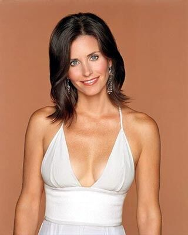

Monica Geller

Mónica es cómicamente obsesiva sobre su apartamento y le encanta limpiar (describe la tintorería como su
Disneyland). Este rasgo de la personalidad se vuelve exagerado cuando la serie avanza. Clasifica las
toallas en 11 secciones, usando ejemplos como de "uso diario", "elegantes", "para invitados", y "para
invitados de lujo".
Mónica etiqueta todo, desde platos a fotografías.
En el episodio "The One with the Dirty Girl" de la cuarta temporada, al final va de noche a la casa de
la ex-novia de Ross y le dice: "No podía dormir pensando en tu apartamento, lo puedo limpiar?"
En la Temporada 1, ella trató de actuar como una "chiflada" y hacer como que no le importaba que dejara
sus zapatos en la sala de estar, pero no pudo dormir, preguntándose si debería ir a buscarlos. También,
Rachel, mueve la otomana de color verde cuando limpia el apartamento, poniendo a Mónica ansiosa.
Chandler le exclama a Rachel, "Gracias a Dios no trataste de avivar las revistas - Quiero decir, ella te
sacaría los ojos."
En otro episodio se supo que tiene suministros para la limpieza de coches porque había un auto sucio
estacionado enfrente del edificio. Ella lo lavó, junto a otros seis.